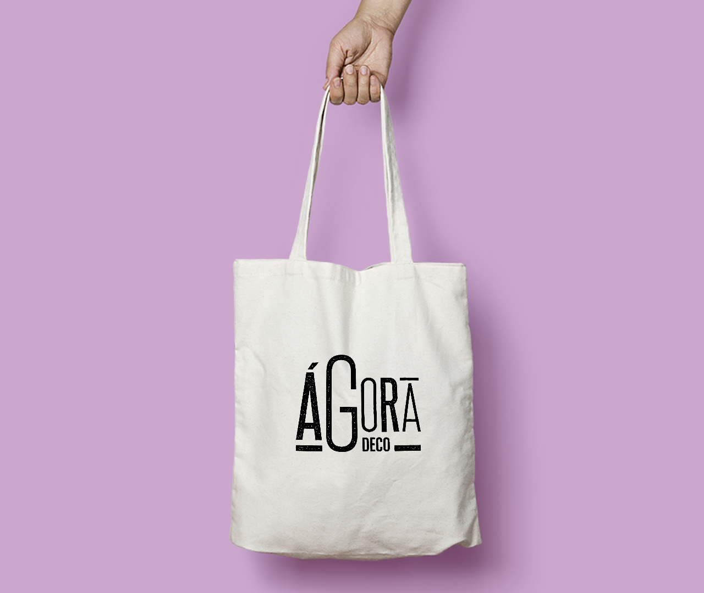
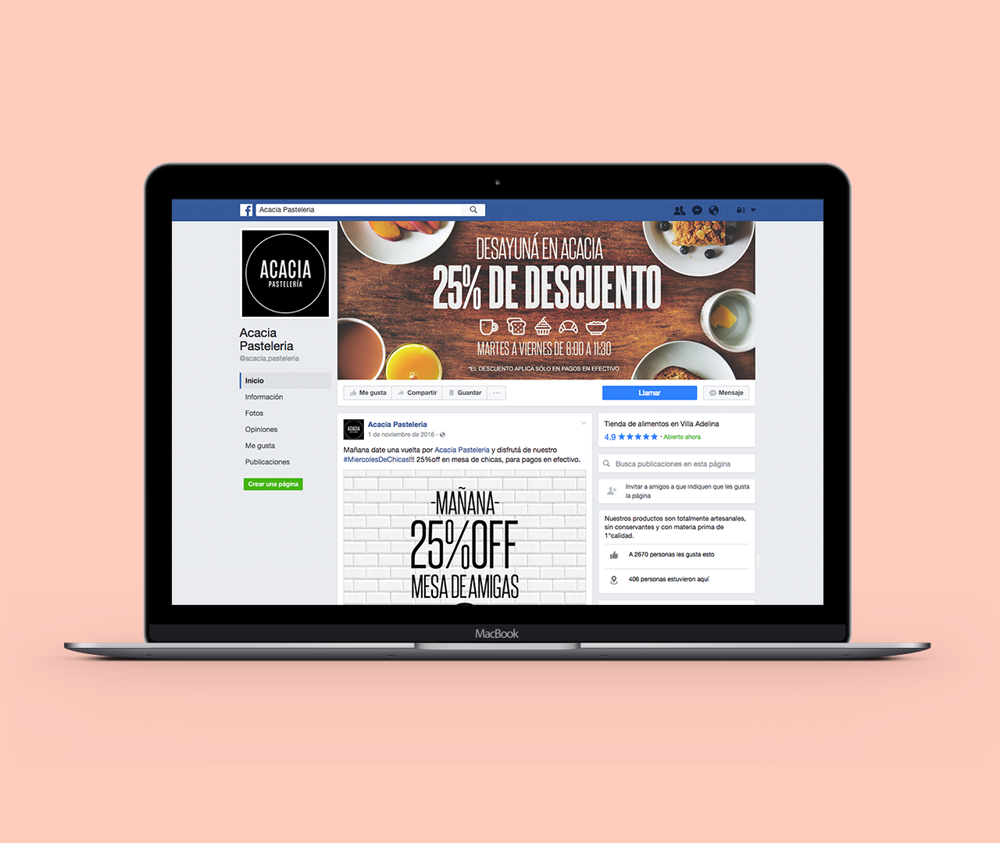
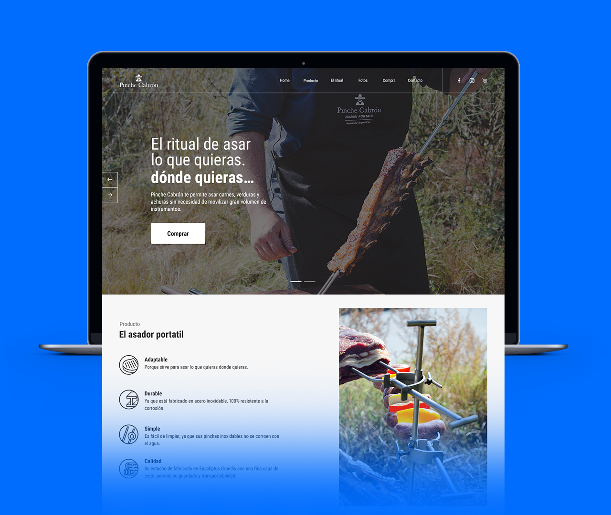

Un poco de mi historia
Soy diseñador gráfico graduado de la Universidad de Buenos Aires y tengo 10 años de experiencia en el área de diseño. Trabajé en varias agencias publicitarias orientadas hacia el marketing digital.
Actualmente trabajo de manera independiente en diferentes proyectos de identidad de marca, diseño web y redes sociales.
Trayectoria
2000-2005
Hice la secundaria en la Escuela Media Nº 11 de Villa Adelina, Buenos Aires, Argentina y en el año 2005 me recibí con el título de bachiller en Ciencias y Humanidades.
2006-2013
Al terminar la secundaria ingrese en la Universidad de Buenos Aires para cursar el CBC en la Facultad de Arquitectura, Diseño y Urbanismo. En el año 2007 lo finalicé para comenzar la carrera de diseño gráfico de la que me gradué en 2013.
2013-2016
Si bien mi carrera profesional comenzó en 2010, fue a partir de 2013 que dio un salto de calidad al convertirme en lider del área de diseño en Woonky, la agencia dónde trabajé hasta 2016.
Trabajos
Branding
Agora Deco
Social Media
Acacia Pastelería
Web Design
Pinche Cabrón